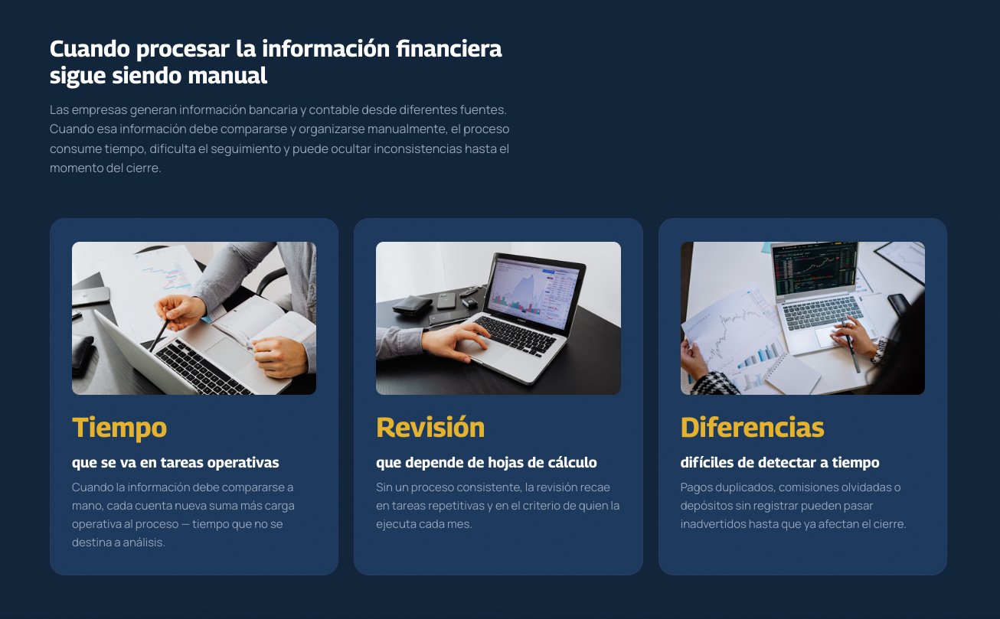
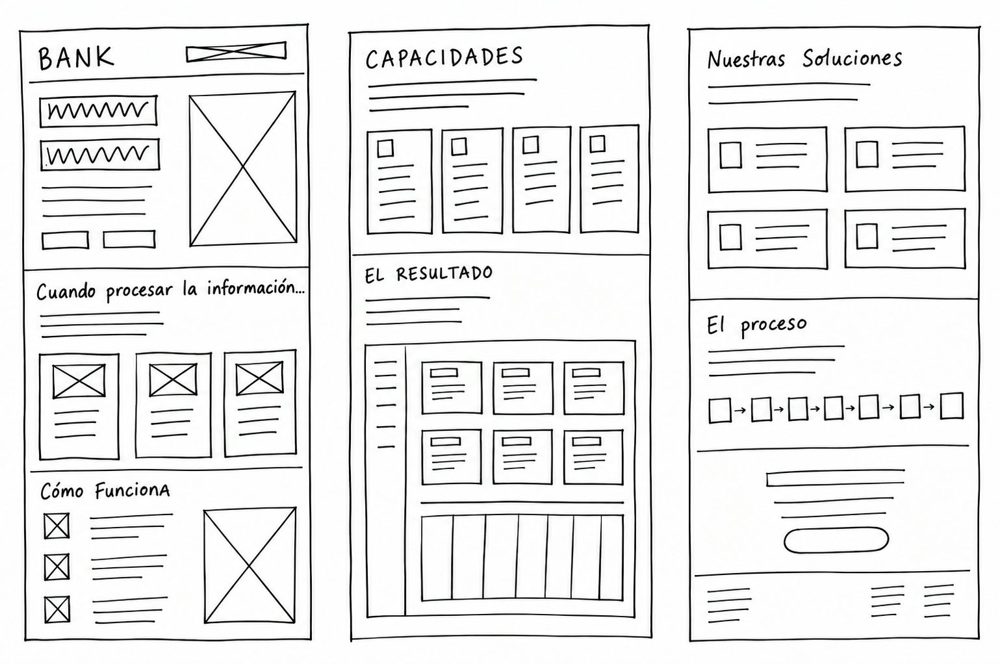
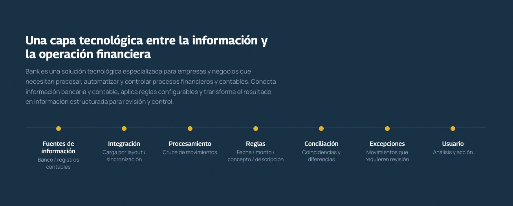
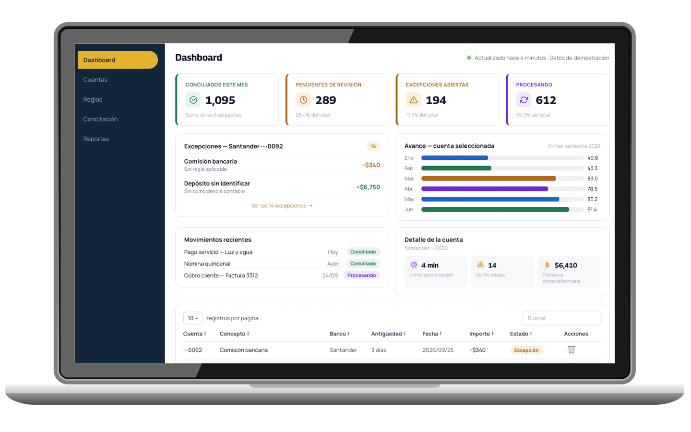
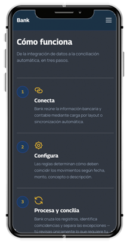

Sin tecnicismos innecesarios — traduciendo un producto técnico de conciliación bancaria en un argumento de negocio que un director financiero entiende en minutos.
En una conciliación bancaria dentro de una empresa: cada mes, alguien compara movimientos del banco contra el registro contable, a mano o en una hoja de cálculo, para encontrar qué coincide y qué no.
Esa experiencia real fue el punto de partida de Bank — una solución tecnológica B2B para automatizar ese proceso: conectar información bancaria y contable, aplicar reglas configurables y convertir el resultado en información clara para el control financiero.
Una decisión clave desde el inicio: el sitio hablaría de negocio antes que de tecnología. Quien evalúa Bank no necesita empezar por entender la conciliación automática; necesita entender qué problema resuelve y qué valor puede aportar a su operación. Esa fue la premisa que gobernó cada palabra y cada sección del sitio.

¿Qué le cuesta a una empresa no tener este proceso automatizado?
El hallazgo que terminó de definir el proyecto. La experiencia tenía que responder a dos audiencias con preguntas distintas en la cabeza: quien firma el contrato, y quien va a operar la herramienta todos los días.
Como el sitio es una sola página con bloques densos —KPIs, tabla, diagramas—, la prueba en baja resolución no era de pantalla en pantalla: era de cuánta carga visual aguantaba cada sección antes de saturar a alguien que solo tiene un minuto para decidir.
Esa prueba fue especialmente útil en la vista de producto: boceté el dashboard con seis indicadores, luego con cinco, y terminé en cuatro — cada reducción hacía más fácil identificar qué información merecía atención primero. Apliqué la misma lógica de reducir hasta que sobreviviera solo lo esencial a cada bloque del sitio: qué necesitaba texto, qué solo necesitaba una cifra, y en qué punto el argumento ya estaba completo para pedir el contacto.

Definí el sistema como un conjunto de variables reutilizables.
Tipografía (Georama para títulos, Manrope para cuerpo de texto), una paleta de marca y de estado, y componentes con sus propias reglas — un botón, una pill, una tarjeta de KPI. Cada elemento del sitio, desde el CTA del Hero hasta el estado "Conciliado" de una fila de la tabla, se construye a partir de esos mismos tokens, evitando decisiones aisladas o valores definidos de forma arbitraria. Esa disciplina es la que permite que un sitio con secciones tan distintas entre sí —una sección de storytelling, un diagrama técnico, una vista de producto con tablas— se lea como un solo sistema y no como piezas ensambladas por separado.
En este sitio B2B el reto era distinto: dos personas con preguntas diferentes —quien evalúa la contratación y quien va a operar la herramienta— tenían que encontrar valor en el mismo recorrido.
Por eso ordené el contenido como una escalera de confianza y no como un menú de temas: primero el dolor que cualquiera de las dos reconoce, después el mecanismo explicado en términos de negocio, luego el detalle operativo que le importa a quien va a usarlo día a día, y solo al final el contacto — cuando ambas ya tienen lo que necesitaban para decidir. Un menú de navegación podía romper esa secuencia, permitiendo saltar directamente a secciones aisladas antes de construir el contexto necesario.
Cada sección responde en orden una duda específica: ¿qué es esto? → ¿por qué me importa? → ¿cómo funciona por dentro, sin tecnicismos? → ¿cómo se implementa? → ¿qué incluye? → ¿cómo se ve el resultado? → ¿puedo confiar en esto con mi información financiera? → ¿cómo empiezo?
El escenario más común no es alguien deslumbrado por la tecnología — es alguien cansado de perseguir diferencias al cierre de mes.
Ese recorrido es la razón por la que "La tecnología" va antes que "Cómo funciona": primero el panorama completo de la solución, después el detalle de cómo funciona. Y es la razón por la que, ya en el sitio, el bloque de Confianza aparece justo antes del CTA final —fuera de este diagrama simplificado— resolviendo la objeción de seguridad cuando el responsable financiero ya está convencido del valor, no antes.
Mi primer planteamiento estaba demasiado enfocado en cómo funcionaba Bank. Conceptos como “integración por API”, “motor de reglas configurables” o “procesamiento por layout” describían con precisión las capacidades del sistema, pero no respondían primero a la pregunta más importante para el negocio: ¿qué valor obtiene la empresa al utilizarlo?
Al revisar el contenido desde la perspectiva de quien evalúa una solución como Bank —por ejemplo, un director financiero, un responsable del área o el dueño de una empresa— entendí que la información técnica debía ocupar otro lugar. Antes de explicar cómo está construido el sistema, había que dejar claro qué problema resuelve, qué cambia en la operación y qué gana la empresa con ello.

El cambio no consistió en eliminar la tecnología, sino en cambiar su posición dentro del discurso. La tecnología sigue siendo fundamental para explicar cómo Bank hace posible la solución, pero deja de ser el mensaje principal. La nueva jerarquía parte del valor para el negocio y después permite profundizar en la solución, el funcionamiento y, finalmente, en los detalles técnicos para quien necesite conocerlos.


El cambio más importante no fue solo de copy: fue de narrativa dentro de la vista de producto. La primera versión del dashboard mostraba métricas genéricas en tarjetas planas. La reescribí aplicando una jerarquía orientada a la decisión: la información más importante no es necesariamente la que ya está resuelta, sino la que requiere atención — por eso el dashboard prioriza las excepciones por encima del volumen total conciliado.
Trabajar en Bank me hizo cuestionar una idea que inicialmente parecía lógica: si un producto es técnicamente sofisticado, su comunicación también debería demostrar esa sofisticación. Sin embargo, términos como “motor de reglas” o “integración por API” describían correctamente el sistema, pero no ayudaban necesariamente al usuario a entender su valor.
Desde UX, entendí que el reto no era simplificar la tecnología, sino simplificar la experiencia de entenderla. La solución fue cambiar la jerarquía de la información: primero comunicar qué problema resuelve Bank y qué obtiene el negocio; después explicar cómo funciona y, finalmente, permitir profundizar en los aspectos técnicos.
También descubrí que la arquitectura de la información debía responder a las necesidades del usuario y no al orden en que el producto fue construido. Mientras una descripción técnica puede comenzar con las fuentes de datos, la integración y el procesamiento, la experiencia del usuario necesita comenzar con su contexto, su problema y el resultado que espera obtener.
Ese cambio de secuencia —del funcionamiento interno hacia el valor percibido— terminó influyendo no solo en el copy, sino también en la jerarquía visual, la estructura del contenido y el recorrido de la página.
Me quedo con una disciplina que quiero aplicar a futuros proyectos B2B: diseñar primero desde lo que el usuario necesita comprender y decidir, y después determinar qué información, interacción y detalle técnico necesita para avanzar.